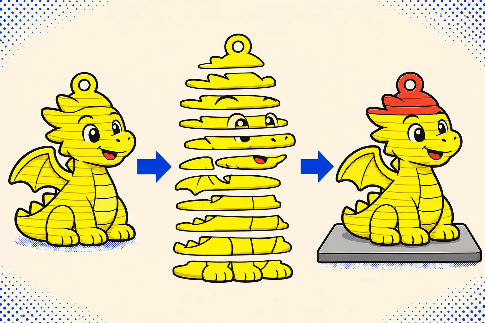
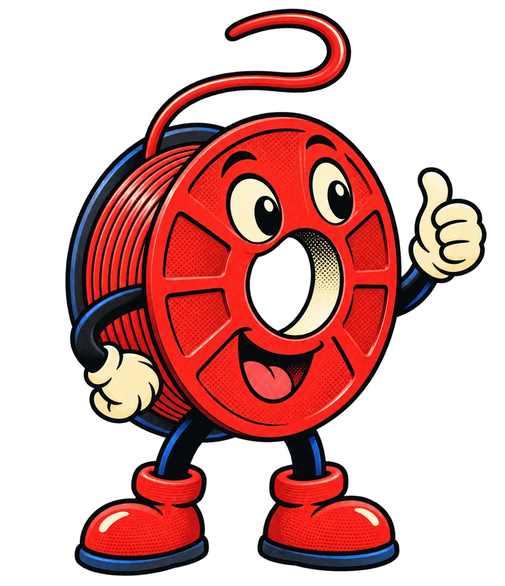
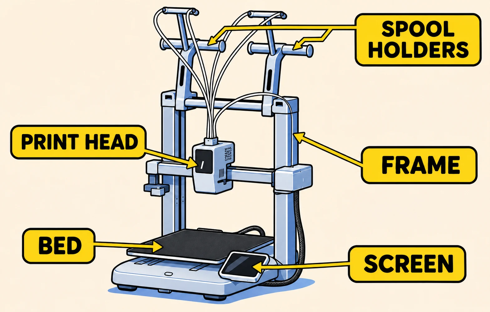
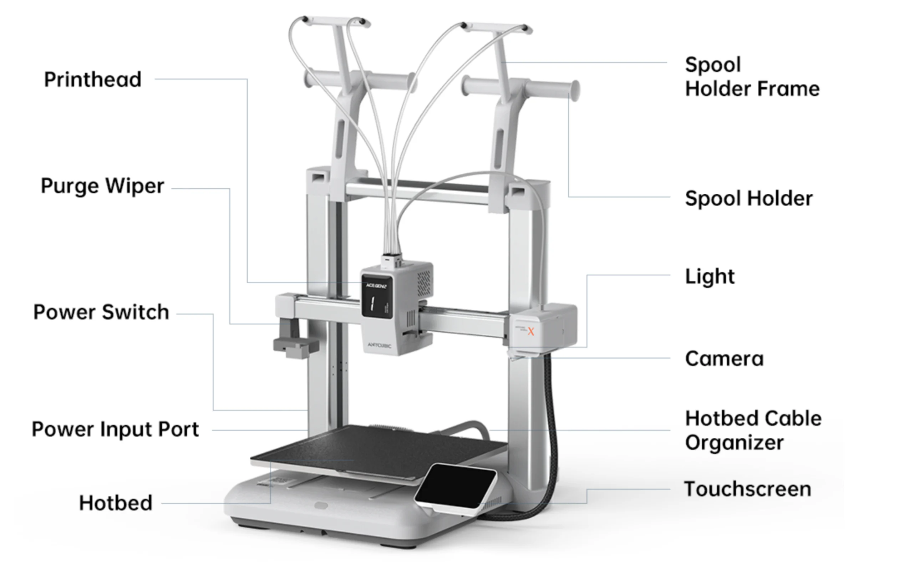
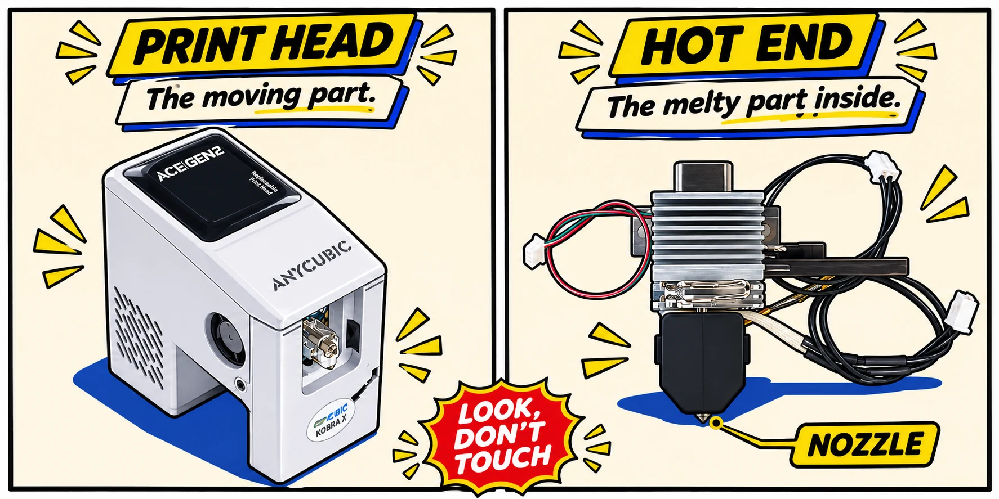
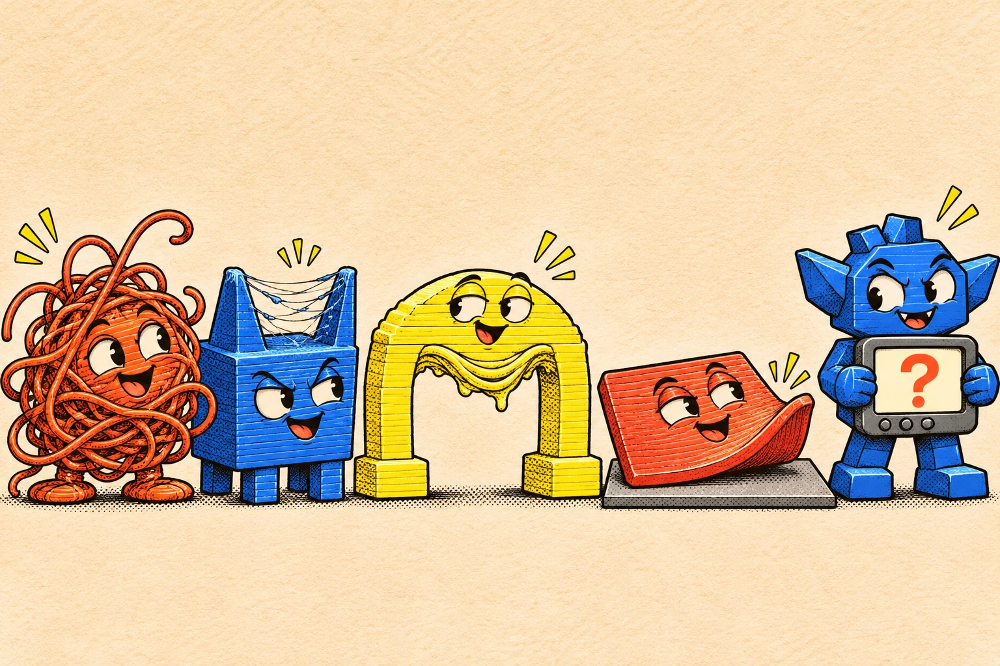

For grown-ups: this comic is for kids roughly 8 to 11 and the adults printing alongside them. Read it together before your first print. Want a paper copy? It prints nicely.
ISSUE #1 · A WELCOME-ABOARD COMIC
The Kobra XCrew!
Your first 3D printing adventure
What even IS 3D printing?


Your new printer takes Spooly’s plastic string, melts it, and squeezes it out of a tiny hot tip called the nozzle. It’s a bit like a robot with a very careful hot glue gun.
LAYER BY LAYER!
The printer draws one flat slice, moves up a tiny bit, then draws the next one on top. Hundreds of slices stack up into a real thing you can hold.
Like stacking pancakes
Imagine making a model out of super-thin pancakes. Each layer is usually about 0.2 mm thick. That’s about as thin as two sheets of paper!
The Kobra X can do layers from 0.05 mm (super fine) to 0.3 mm (faster and chunkier).
So… how long does it take?
A small keychain might take 20 minutes. A big model can take many hours. The slicer (Chapter 4) will tell you before you start.
Meet the Kobra X!
This is your printer. Let’s learn five names—then peek inside the print head.

See the real printer photo ↗

Bed = the landing pad
Your model grows on the flat build plate. The heated bed sits underneath it. Both can be hot—hands off until a grown-up says it’s cool.

Your spotting mission
Look at the picture. Find the bed. Now find the head. Which one carries the nozzle?
Show me the answer!
The print head carries the hot end and its nozzle. The bed holds your growing model.
Eyes on. Hands out.
The head moves. The hot end and bed heat up. Watch from outside the printer, with a grown-up.
Photo references: Anycubic’s Kobra X component guide. Illustrations adapted from manufacturer images.
The Maker’s Safety Code
Always do
- Print with a grown-up the first few times.
- Wait until the printer says the bed has cooled before taking your print off.
- Tie back long hair and roll up loose sleeves near the printer.
- Keep the printer on a sturdy table, in a room with fresh air.
- Tell a grown-up if you smell burning or hear grinding.
Never do
- Never touch the nozzle, even when it looks cool.
- Never reach in while the print head is moving.
- Never let pets or little siblings play near it while it runs.
- Never use sharp metal tools to scrape the plate.
- Never print weapons or anything to hurt someone. Make cool stuff!
From idea to real thing
Where do models come from?
You can download them from websites full of free designs, like Anycubic’s MakerOnline, Printables or Thingiverse. Ask a grown-up to help you pick a site.
Or you can design your own with a free kid-friendly tool like Tinkercad. Build with shapes like digital LEGO!
The slicer: the printer’s brain helper
The printer can’t look at a dragon and figure it out. The slicer is a free computer program that does the thinking.
It cuts your model into hundreds of thin layers, like slicing a loaf of bread, then plans exactly where the nozzle should go on every single layer.
The slicer for your Kobra X
It’s called Anycubic Slicer Next. It’s free, and it already knows all about your printer. (Grown-ups: it’s built on OrcaSlicer, so OrcaSlicer works too.)
The slicer also decides…
Each plastic likes a different temperature.
The inside is mostly empty, filled with a honeycomb or zig-zag pattern. Saves plastic and time!
Parts that hang over thin air (like a dragon’s chin) need little scaffolds holding them up. You snap them off after.
You can “paint” parts of your model so the Kobra X swaps colours in the right spots.
It tells you how long it’ll take and how much filament it’ll use.
Your first slice, step by step
- Open Anycubic Slicer Next and make sure Kobra X is chosen as your printer.
- Drag your model file into the window. It appears sitting on a picture of the build plate.
- Pick your filament type (start with PLA) and which colour slot to use.
- Press Slice. Wait a few seconds while it does the math.
- Use the preview slider to watch the layers build up. Does it look right?
- Press Print to send it to the Kobra X. Then watch the first layer go down!
Know your file types!
The classic 3D shape file. Just the shape, made out of thousands of tiny triangles. No colours.
Open it in the slicer. ✔
Another shape file. This one can carry colour and texture info too. Lots of 3D art programs save these.
Open it in the slicer. ✔
A newer file that packs everything together: the shape, the colours, and even the slicer settings. Great for multi-colour prints!
Open it in the slicer. ✔
The recipe the slicer makes. It’s thousands of lines of “move here, squeeze this much.” The printer reads it. People don’t need to!
Made BY the slicer, sent TO the printer.
Spooly’s family: types of filament
The beginner’s best friend! Easy to print, barely smells, and comes in tons of colours: sparkly silk, matte, even glow-in-the-dark.
- Easy?
- Tough?
Watch out: it gets soft in a hot car.
The tough one. Stronger and a bit bendier than PLA, and handles heat better. It’s related to the plastic in water bottles.
- Easy?
- Tough?
Can leave little “hairs” (strings) on prints.
The bendy, squishy one! Rubbery like a phone case or a bouncy ball. Great for squeeze toys and bumpers.
- Easy?
- Tough?
Prints slowly. Pick the TPU setting in the slicer.
The grown-ups-only one. Very strong and heat-proof, but it needs high heat and gives off smelly fumes.
- Easy?
- Tough?
Skip it for now. Stick with PLA and PETG.
Spooly’s secret: keep me DRY!
Filament soaks up water from the air, like a sponge. Wet filament makes popping sounds and stringy, bumpy prints. When you’re done, put spools back in a sealed bag with the little drying packet. Your Kobra X uses filament that’s 1.75 mm thick, the most common size, so it’s easy to find in stores.
Operation: Squeaky-Clean Plate
Popping your print off
- Wait until the bed is cool. Patience!
- Lift the steel plate off the magnets by its front edge.
- Gently bend the plate a little, like bending a book cover. Your print pops right off. POP!
- Put the plate back textured side up, with its edges lined up with the bed underneath.
The deep clean
Do this every few prints, or when things stop sticking.
- Take the cool plate to the sink.
- Wash it with warm water and a drop of dish soap. Use your hand or a soft sponge, never a scratchy one.
- Rinse well so no soap is left.
- Dry it with a clean paper towel. Hold it by the edges from now on!
Quick wipe (grown-up job)
Between prints, a grown-up can wipe the cool plate with a bit of rubbing alcohol (isopropyl) on a paper towel. It cleans off fingerprints fast and dries in seconds.
Plate don’ts
- No metal scrapers or knives. They scratch the special surface.
- No touching the printing side with fingers.
- No cleaning while it’s hot.
Villains of the print bed!

The Spaghetti Monster
Your print came unstuck and the printer made a big tangle of plastic noodles.
Defeat it: clean the plate (Chapter 8) and try again. The camera might pause the print for you if it spots trouble.
The Hairy Stringer
Thin wispy strings everywhere, like a cobweb.
Defeat it: your filament might be damp. Keep it dry. Little strings brush off easily.
The Droopy Dropper
A part hanging over air came out saggy or messy.
Defeat it: turn on supports in the slicer before you slice.
The Peely Corner
The corners of your print lift up and curl.
Defeat it: clean the plate, or add a brim in the slicer: a thin skirt of plastic around the bottom that helps it hold on. Peel it off after.
The Error Code Gremlin
The screen shows a message or number you don’t understand.
Defeat it: get a grown-up. Look up the code on the Anycubic help website (wiki.anycubic.com). Most fixes are quick.
Maker words + your first missions
Mission list: try these first!
- A name tag or keychain with your name on it
- A bookmark
- A wiggly flexi-animal (it prints already moving!)
- A two-colour coaster
- A cookie cutter for a family baking day
- Something you designed yourself in Tinkercad
MakerCREW MEMBER
Maker’s name:
The quick facts
- Printer: Anycubic Kobra X, 4 colours built in (expandable with extra ACE units).
- Print size: 260 × 260 × 260 mm.
- Nozzle: 0.4 mm hardened steel, up to 300°C.
- Bed: textured PEI spring-steel plate, up to 100°C. Auto-leveling.
- Slicer: Anycubic Slicer Next (free, Windows and Mac). OrcaSlicer also has a Kobra X profile.
- Files in: STL, OBJ, 3MF. File out: G-code.
- Filament: 1.75 mm. Start with PLA; PETG and TPU next. ABS needs strong ventilation.
- Help: manuals, videos and error-code fixes at wiki.anycubic.com.
Made by Thom Hamilton to welcome a new family to 3D printing. Have fun, and enjoy the do-overs. Every maker has them.